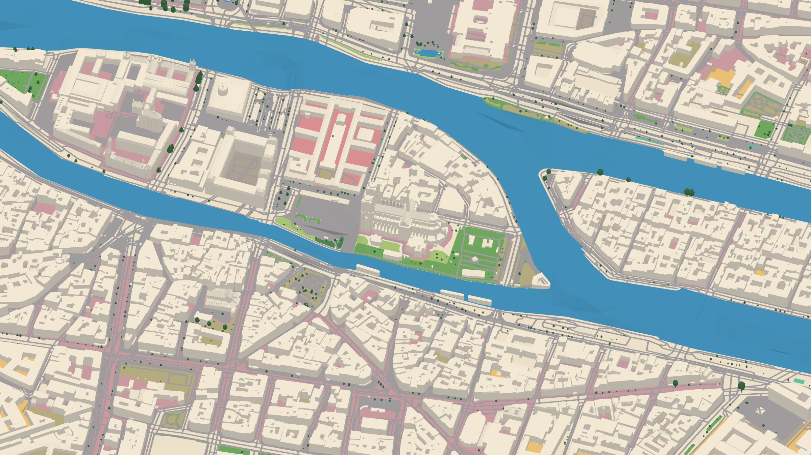
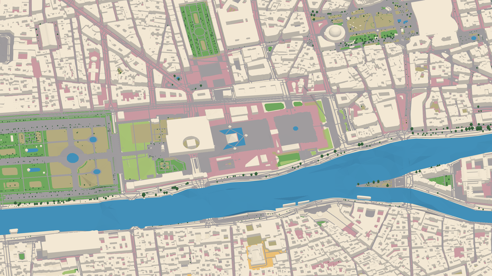
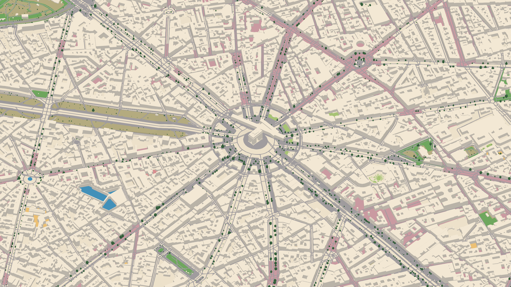
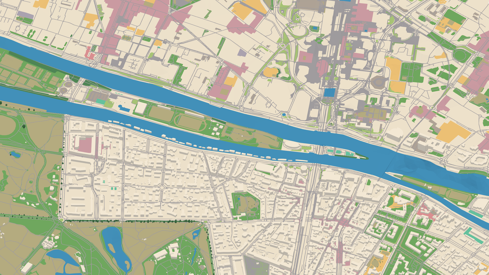

.pdf
.pdf
Paris 8 km on Discoverer: Ktirio Urban Building at 32,768 MPI ranks
Cemosis at the University of Strasbourg ran Ktirio Urban Building on 32,768 MPI ranks on the EuroHPC Discoverer supercomputer for the Paris 8 km case.
The run simulated 207,624 buildings on a detailed mesh of 68,207,038 triangles, split into 32,768 partitions. It traced 471,821,112 solar rays and took 14 min 55 s of wall time on Discoverer, with field output disabled.
1. The Paris 8 km domain
The case covers an 8 km radius around Notre-Dame. The flyover illustrates the study domain and shows buildings alongside the Seine, parks and streets.
Map legend
- Buildings
- Water
- Roads
- Unclassified ground
- Parks
- Grass
- Woodland
- Scrub
- Agriculture
- Trees (close-ups)
- Sports pitches
- Cemeteries
- Schools
- Hospitals
- Commercial areas
- Industrial areas
- Parking
- Sand
- Rock
- Multiple uses




2. Why solar masks matter at city scale
A solar mask uses ray intersections to estimate how much of a surface can receive direct sunlight. Evaluating more points on each face increases the number of queries, and an occluding building can belong to a different part of the distributed mesh. This is one reason mesh partitioning and communication matter for the Ktirio workflow.
Both views show the area around Notre-Dame on 15 July 2025 at 09:00 in Paris (UTC+2). The sun is almost due east, 86.7° clockwise from north and 26.5° above the horizon. The camera looks towards Notre-Dame from the southeast. The N arrow points north and the ☀ arrow points towards the sun in the plane of the map.
The reference ignores obstructions, so yellow shows surfaces whose angle allows them to receive direct sun. In the view with cast shadows, yellow indicates that all seven sample rays reach the sun, while dark purple indicates that buildings block all seven. Blue-grey marks surfaces whose angle prevents them from receiving direct sun at this time. It has the same meaning in both views. The calculation uses ray tracing on the Paris 8 km LoD1 mesh. Only building surfaces can block rays in this example.
Fraction of direct-sun rays blocked
0 % 100 %
Surface angle prevents direct sun
Mesh orientation undetermined


2.1. From morning to afternoon above Notre-Dame
The camera and the land-use colours stay fixed. The animation uses 17 independently calculated states at 30-minute intervals, from 09:00 to 17:00 Paris time on 15 July 2025. Each frame shows the time, the direction of the sun and its elevation. Watch the shadows move across roofs and facades while the Seine and green spaces stay visible.
3. Distributed ray intersections
Feel++ 0.112.0 adds top-level (TLAS) and bottom-level (BLAS) acceleration structures for fast ray intersections across many MPI ranks. The top level identifies the mesh partitions a ray may hit, and the bottom level tests it against triangles on those ranks.
4. Collaboration and sources
Ktirio Urban Building is developed by Cemosis at the University of Strasbourg as the Urban Building pilot of the European HiDALGO2 Centre of Excellence. It is also a demonstrator for NumPEx. This case builds on the topic introduced in Exa-MA’s earlier urban meshing highlight, which documents contributions from Cemosis, Inria and GeometryFactory to reconstruction with Ktirio and CGAL.
Building data include contributions from OpenStreetMap (© OpenStreetMap contributors) and Microsoft ML Buildings.